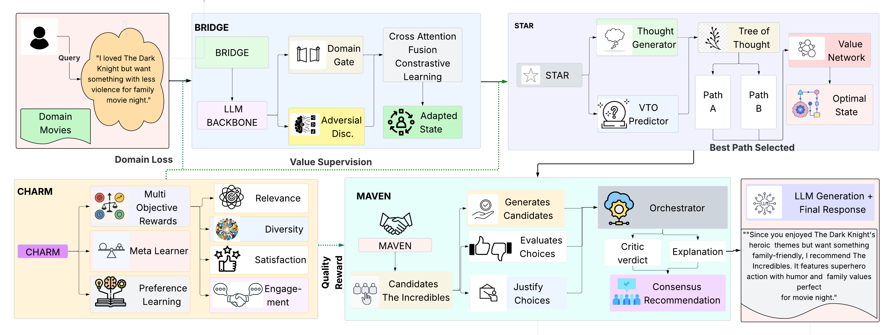

An agentic framework that combines deliberative reasoning with hierarchical preference optimization for high-quality, user-aligned recommendations.
Conversational recommender systems are often trained and evaluated using proxy metrics (Recall@K, BLEU) that weakly reflect true user-aligned recommendation quality. HARPO reframes conversational recommendation as a structured decision-making problem, explicitly optimizing for user satisfaction, relevance, diversity, and engagement.
Abstract: Conversational recommender systems (CRSs) operate under incremental preference revelation, requiring systems to make recommendation decisions under uncertainty. While recent approaches, particularly those built on large language models, achieve strong performance on standard proxy metrics such as Recall@K and BLEU, they often fail to deliver high-quality, user-aligned recommendations in practice. This gap arises because existing methods primarily optimize for intermediate objectives like retrieval accuracy, fluent generation, or tool invocation, rather than recommendation quality itself.
HARPO integrates: (i) CHARM — hierarchical preference learning that decomposes recommendation quality into interpretable dimensions (relevance, diversity, predicted user satisfaction, and engagement) and learns context-dependent weights; (ii) STAR — deliberative tree-search reasoning guided by a learned value network; (iii) BRIDGE — domain-agnostic reasoning abstractions enabling cross-domain transfer; and (iv) MAVEN — multi-agent refinement through collaborative critique.

HARPO integrates four tightly coupled modules built on a shared language model backbone (DeepSeek-R1-Distill-Qwen-7B).
Structured Tree-of-Thought Agentic Reasoning
Beam search over structured reasoning states guided by a learned value network that predicts multi-dimensional recommendation quality rather than task completion.
Contrastive Hierarchical Alignment with Reward Marginalization
Decomposes recommendation quality into four reward dimensions with context-dependent meta-learned weights and margin-based preference optimization.
Cross-Domain Transfer
Adversarial domain adaptation with learnable domain gates — preserves domain-invariant reasoning patterns while retaining domain-specific information.
Multi-Agent Refinement
Three specialized agents (Recommender, Critic, Explainer) collaborate through shared representations with an agreement loss promoting coherent consensus.
HARPO introduces a quality-centric evaluation perspective separating user-aligned measures from standard proxy metrics.
Rankings across three datasets on user-aligned metrics. Click any column header to sort. Filter by model type or search by name. Higher is better for all metrics.
| # | Model | Satisfaction ↕ | Engagement ↕ | Div.-Adj. Relevance ↕ | Human Pref. ↕ | Overall Score ↓ |
|---|
† Text-only adaptation. ‡ Fine-tuned per Wang et al. 2025. Scores normalized [0,1]. Human Pref. = Table 8 Overall score (1–5, normalized).
Paste your results JSON below. Evaluated against the official HARPO benchmark API at github.com/harpo-bench/harpo.
All fields required. Results are verified server-side using the HARPO evaluation API.
{
"method_name": string,
"team": string,
"dataset": "redial"|"inspired"|"muse",
"predictions": [{ "conv_id": string, "recommended_items": number[] }],
"paper_url": string | null,
"code_url": string | null,
"description": string // ≤ 200 chars
}
HARPO demonstrates consistent improvements across three conversational recommendation benchmarks (ReDial, INSPIRED, MUSE) with particularly strong gains on user-aligned metrics. All improvements significant at p < 0.01 (paired t-test, Bonferroni correction).
| Method | R@1 | R@10 | R@50 | MRR@10 | NDCG@10 | User Sat. | Engage. |
|---|---|---|---|---|---|---|---|
| KBRD Open-source | 2.9±0.2 | 16.7±0.4 | 36.2±0.7 | 7.4±0.2 | 10.2±0.3 | 0.42±0.02 | 0.38±0.02 |
| KGSF Open-source | 3.8±0.2 | 18.1±0.5 | 37.4±0.7 | 8.4±0.3 | 11.6±0.4 | 0.45±0.02 | 0.41±0.02 |
| BARCOR Open-source | 3.0±0.2 | 16.8±0.4 | 36.8±0.6 | 7.8±0.2 | 10.8±0.3 | 0.44±0.02 | 0.40±0.02 |
| LLaMA-2-7B Open-source | 2.2±0.3 | 13.6±0.6 | 33.4±0.9 | 6.2±0.3 | 8.6±0.4 | 0.38±0.02 | 0.34±0.02 |
| LLaMA-2-13B Open-source | 2.8±0.3 | 15.4±0.6 | 35.6±1.0 | 7.2±0.4 | 9.9±0.5 | 0.43±0.02 | 0.39±0.02 |
| UniCRS Open-source | 4.8±0.3 | 21.2±0.5 | 40.8±0.8 | 10.1±0.3 | 13.8±0.4 | 0.51±0.02 | 0.47±0.02 |
| DCRS Agent | 7.5±0.3 | 25.1±0.6 | 43.6±0.9 | 12.2±0.4 | 15.2±0.5 | 0.56±0.02 | 0.52±0.02 |
| ChatGPT GPT | 3.3±0.4 | 17.0±0.7 | 37.8±1.1 | 8.0±0.4 | 11.0±0.5 | 0.49±0.03 | 0.45±0.03 |
| GPT-4 GPT | 4.5±0.4 | 19.4±0.8 | 40.2±1.2 | 9.6±0.5 | 13.2±0.6 | 0.55±0.03 | 0.51±0.03 |
| RecMind Agent | 5.8±0.3 | 22.6±0.6 | 42.2±0.9 | 11.2±0.4 | 15.3±0.5 | 0.54±0.02 | 0.50±0.02 |
| InteRecAgent Agent | 5.2±0.3 | 21.4±0.6 | 41.0±0.8 | 10.4±0.4 | 14.3±0.5 | 0.52±0.02 | 0.48±0.02 |
| HARPO Ours | 9.1±0.3 | 29.8±0.7 | 50.2±1.0 | 15.6±0.5 | 21.2±0.6 | 0.68±0.02 | 0.64±0.02 |
† Text-only adaptation. ‡ Fine-tuned following Wang et al. (2025).
If you use HARPO or the HARPO evaluation suite, please cite our ACL 2026 paper:
@inproceedings{raj2026harpo,
title = {HARPO: Hierarchical Agentic Reasoning for
User-Aligned Conversational Recommendation},
author = {Raj, Subham and Jha, Aman Vaibhav and
Anand, Mayank and Saha, Sriparna},
booktitle = {Proceedings of the 64th Annual Meeting of the
Association for Computational Linguistics (ACL)},
year = {2026}
}Ready to Try HARPO?
View on GitHubHARPO reframes conversational recommendation as a quality-centric decision-making problem — optimizing for what users actually care about, not just what metrics can measure.
Accepted at ACL 2026 · © 2026 HARPO Authors · IIT Patna · IIIT Allahabad